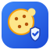

DSH Cookie Whitelist Bridge
把浏览器里的 Cookie 只交给本地 DSH 插件，并且只限用户在插件里逐条批准的域名。
配对
在 DSH 的「设置 → Cookie 白名单」里复制接收地址和令牌。接收端只监听 127.0.0.1。
这个扩展做什么
- 轮询本机接收器，只读取接收器返回的、已批准白名单域名的 Cookie。
- 在离开浏览器之前再次按域名过滤；不会把其他站点的 Cookie 发出。
- 只向
127.0.0.1发送数据，不连接任何远程服务器，无遥测。 - 浏览器关闭后扩展不保留 Cookie 副本；插件端也只保存在内存中。
扩展需要 <all_urls> 权限，这是 chrome.cookies / browser.cookies 读取任意域名 Cookie 的前置条件；扩展没有内容脚本，也不读取页面内容。
运行状态
- 最近轮询
- —
- 最近错误
- —
- 连接状态
- 未知